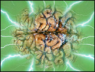

|
 Psychokinesis: Proving the Power of the Mind by Craig Miller Special to ParaScope Have you ever sat in your car at an intersection, willing the light to turn green? Or stared at a slot machine, trying to create a match with wishful thinking? According to the results of recent psychokinesis experiments, you should keep trying. FATE Magazine Associate Editor Craig Miller examines ground-breaking research in psychokinesis, or PK -- the supposed ability of the human mind to affect inanimate objects, discussing possible proof for PK and current ideas about the nature of this phenomenon. Reprinted with permission from FATE Magazine. http://www.llewellyn.com (c) Copyright 1997 Llewellyn Worldwide, Ltd.
|